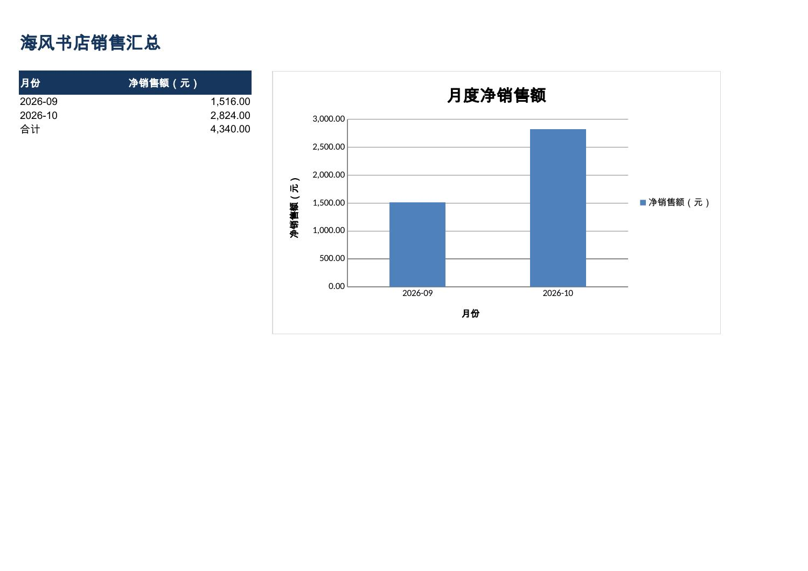
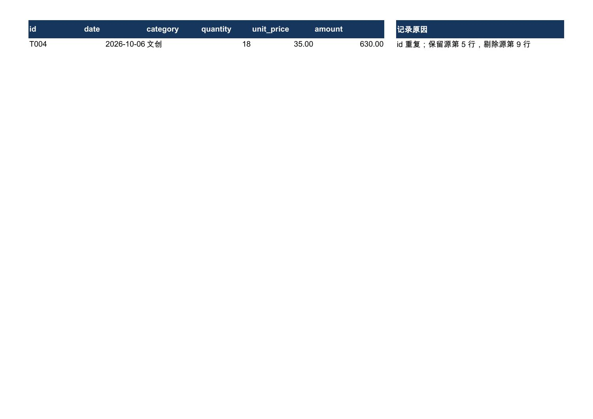

← 返回 Skill 详情semifly · 本地真实运行记录 · 2026-11-17 · 虚构测试材料
去重、退货与月度汇总：合计 4,340 元
计算通过 · 原重算超时实际安装 xlsx Skill，生成 3 张工作表、11 个公式和原生图表。原 recalc.py 两次超时；另用 LibreOffice 直接转换验证公式与改价联动，未把替代路径冒充原脚本成功。
- 8 条输入去重为 7 条，重复记录单独保留，退货 -136 元未丢失
- 独立重算：9 月 1,516、10 月 2,824、合计 4,340
- 单价 68→70 后：9 月 1,540、合计 4,364；原始文件未覆盖
原始 XLSX 的公式缓存为空；另附重算副本。原脚本仍未通过全流程；渲染有较多留白，未在 Microsoft Excel 中验收。
真实生成文件经 LibreOffice 渲染后的预览页截图；不是 Microsoft Office 客户端截图。 CLI 默认模型；未记录确切服务端模型 ID，未取得金额账单，未验证 OneAPI 模型组合。

实际产物 · 1 / 3 实际产物 · 2 / 3
实际产物 · 2 / 3
实际产物 · 3 / 3